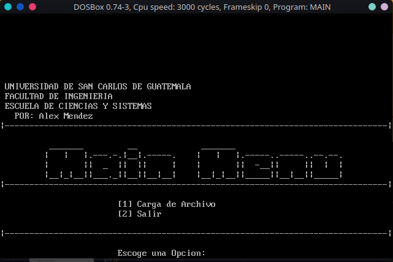

LECTURA DE ARCHIVO XML (BAJO UNA ESTRUCTURA ESPECÍFICA)
Fines
- Este ejemplo fue realizado únicamente con fines educativos, el código utilizado queda con acceso y uso libre para que puedan basarse de la idea y mejorarla o adaptarlo a sus necesidades.
Alcances
-
El ejemplo realizado no tiene la capacidad de realizar un análisis de un XML genérico .
-
El ejemplo solo tiene la capacidad de analizar un archivo XML, bajo una estructura específica que más adelante se describirá.
-
Lo archivos de prueba debe de estar sin ningún tipo de error ya que no fue considerado, es decir:
-
Toda etiqueta que fue abierta esta debe tener su respectiva etiqueta de cierre.
-
Por lo mismo del punto anterior al encontrar una etiqueta de cierre no se verifica si es la etiqueta correspondiente a la etiqueta anteriormente abierta.
Estructura del Ejemplo
.
`-- Read_XML/
|-- analysis/
| `-- analysis.asm
|-- docs/
|-- ctrllr/
| |-- loadCtrl.asm
| `-- menuCtrl.asm
|-- macros/
| |-- file.asm
| `-- macros.asm
|-- file.xml
|-- main.asm
|-- MAIN.EXE
`-- views/
|-- loadView.asm
`-- menuView.asm
Descripción de algunas carpetas o archivo de la estructura
| Archivo / Carpeta | Descripción |
|---|---|
| analysis/ | en esta carpeta se encuentra la macro realizado para el análisis del archivo de entrada. |
| ctrllr/ | en esta carpeta se encuentra los controladores correspondiente a cada vista, son macros el cual contiene la lógica de cada vista. |
| macros/ | en esta carpeta se encuentran las macros de propósito general así como también las macros usadas para el manejo de archivos. |
| docs/ | en esta carpeta se encuentra los archivos de documentación |
| file.xml | estos son los archivos de entrada para realizar analisi |
| main.asm | es el archivo principal de la practica |
| MAIN.EXE | ejecutable del ejemplo |
| views/ | en esta carpeta se encuentran las vistas de cada uno de las opciones (Menú y carga de archivo) |
Estructura del archivo XML
El archivo contendrá una lista de estudiantes con un los siguientes datos:
-
Nombre que viene con espacios entre nombres y apellidos
-
Registro o carne que tiene guiones.
<STUDENT>
<STUDENT1>
<name> .... </name>
<idCard> .... </idCard>
</STUDENT1>
.
.
.
<STUDENTn>
<name> .... </name>
<idCard> .... </idCard>
</STUDENTn>
</STUDENT>
Con el fin de ejemplificar se necesita que de salida muestre la siguiente etstructura:
ID: [la itequeta que contiene los datos del estudiante]
NOMBRE: [nombre del estudiante sin espacios]
REGISTRO: [registros del estudiante sin guiones]
FIN_ID
Archivo de entrada de ejemplo
<STUDENT>
<STUDENT1>
<NAME>Denis Swapan White</NAME>
<idCard>590-09-0410</idCard>
</STUDENT1>
<STUDENT2>
<nAmE>Moreno Goyathlay Henson</nAmE>
<idcard>214-32-0525</idcard>
</STUDENT2>
<STUDENT3>
<NAMe>Stela Sadia Long</NAMe>
<IdCaRD>215-69-7500</IdCaRD>
</STUDENT3>
<STUDENT4>
<NAMe>Wanda Barcia Brown</NAMe>
<IdCaRD>607-38-9775</IdCaRD>
</STUDENT4>
</STUDENT>
Salida esperada
ID: student1
NOMBRE: DenisSwapanWhite
REGISTRO: 590090410
FIND_ID
ID: student2
NOMBRE: MorenoGoyathlayHenson
REGISTRO: 214320525
FIND_ID
ID: student3
NOMBRE: StelaSadiaLong
REGISTRO: 215697500
FIND_ID
ID: student4
NOMBRE: WandaBarciaBrown
REGISTRO: 607389775
FIND_ID
Salida Obtenida

Capturas de Pantalla
Menú Principal

Carga de Archivo